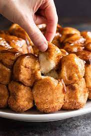

Monkey balls

CHEWING ON SOME BALLS
big ballsy
- 1 ⅓ cup (320 ml) warm whole milk, 105 -115ºF
- 3 tablespoons unsalted butter, melted
- ¼ cup (50 g) granulated sugar
- 2 ¼ teaspoons active dry yeast, 1 packet - SEE NOTE 1
- 3 ½ cups (455 g) all-purpose flour
- 1 ¾ teaspoons salt
- In a large measuring cup, whisk the milk, butter, sugar, and yeast together.
- In the bowl of a stand mixer fitted with the dough hook, combine the flour and salt. Turn the mixer on low speed and slowly drizzle in the milk mixture.
- Once the dough comes together, increase the speed to medium and mix until the dough is smooth and shiny, about 7 minutes. The dough will be sticky. (If the dough is wet, gradually mix in 1 tablespoon of flour at a time until it is no longer wet but sticky.)
- Turn the dough out onto a lightly floured surface and shape it into a ball.